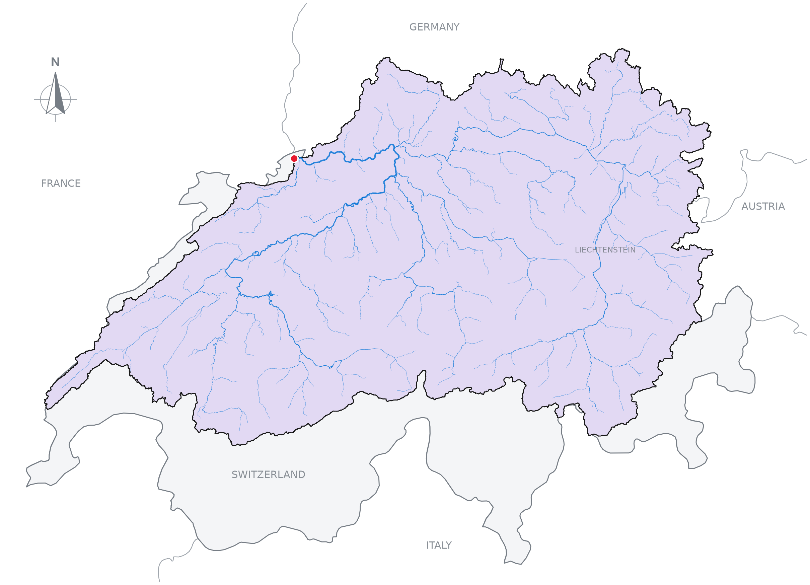

Pourpoint

Pourpoint is a Python package for delineating watersheds from existing hydrofabrics. A watershed is the area of land that drains to a particular outlet. A hydrofabric represents that landscape as connected sub-basins and rivers, sometimes accompanied by flow-direction and flow-accumulation rasters.
Starting from a point, Pourpoint follows those connections upstream to collect the contributing sub-basins. Where rasters are available, it can refine the watershed cell by cell to resolve the land draining to the chosen outlet. You can work with the resulting geometries in Python or export them with the river network to a portable QGIS project.
Pourpoint reads hydrofabrics through HydroFabric Exchange (HFX), which packages their geometries, connections, attributes and available rasters. The concepts guide explains how these pieces fit together, from a point watershed to the upstream contributing area of a region.
Install
Requires Python 3.13 or later. With uv, add Pourpoint to your project.
uv add "pourpoint==0.5.0rc3"
This is a release candidate of the Python rewrite, available for testing before 0.5.0.
Use with a coding agent
Copy the prompt below into your coding agent after installing Pourpoint.
Get your coding agent on board
Use Pourpoint to delineate watersheds from existing HFX hydrofabrics.
Check that pourpoint imports in the project's own Python environment
(Python 3.13 or newer) and note its installed version. Use the project's
runner, such as uv run python, not a separate agent environment. If setup
fails, report the error. Do not install or upgrade packages automatically.
Pourpoint reads compiled HFX bundles, not arbitrary source hydrofabrics or
DEMs. Use a local bundle directory or an accessible HTTP(S)/S3 bundle URL.
Check supported HFX versions and representations in the getting-started
guide. Remote reads need access to the host; cached data may be incomplete.
Only access data needed for the user's task and respect source-data terms.
Typical vector-only workflow, with the user's HFX bundle and outlet:
import pourpoint as pp
with pp.HydroFabric(dataset) as fabric:
result = pp.delineate(fabric=fabric, target=point)
watershed = result.geometry
subbasins = result.subbasins
Here dataset is a bundle path or URL and point is a Shapely Point in
EPSG:4326 (longitude, latitude). Vector targets and outputs use that CRS;
native raster outputs retain their own CRS. Catchment level defaults to 1,
not the finest level. This example selects whole upstream sub-basins.
Snapping needs explicit snap_onto geometry; its radius is in metres.
refine=True needs covering direction and accumulation rasters and never
silently falls back to a coarse result. Consult the README's Rhine example
for snapping, refinement and QGIS export; do not run it just for onboarding.
Single-target OperationError exposes code and reason. For batches, inspect
issues and None result slots; valid empty selections are not failures.
Configuration and integrity errors raise. Do not treat partial batch success
as complete coverage or source attributes as recomputed for clipped areas.
Keep source-dependent work and exports inside the HydroFabric context.
QGISBundle writes a new folder and refuses to overwrite an existing one;
move the whole folder together. River selection is a separate operation.
Consult documentation as needed, checking signatures against the installed
version:
- HFX datasets, coordinates and caching:
https://pourpoint-tools.github.io/getting-started/
- Selection, refinement, batches, failures and portable output:
https://pourpoint-tools.github.io/operations/
- Exact API signatures and returned types:
https://pourpoint-tools.github.io/reference/operations/
https://pourpoint-tools.github.io/reference/results/
Continue the user's task without onboarding questions. If no task was
given, briefly confirm readiness.
Delineate the Rhine at Basel
The point at 47.5596° N, 7.5890° E lies on the Rhine in Basel, Switzerland. We will use the public GRIT hydrofabric to find its watershed and save a QGIS project. Pourpoint reads the required data from the hosted HFX bundle, so this example needs an internet connection.
A point chosen on a map can fall slightly beside the hydrofabric's river line. We first select nearby rivers and snap the point to the nearest segment within 100 metres. Coordinates use longitude followed by latitude.
from shapely.geometry import Point, box
import pourpoint as pp
dataset = "https://basin-delineations-public.upstream.tech/grit/hfx-v0.4.0/"
point = Point(7.5890, 47.5596)
with pp.HydroFabric(dataset) as fabric:
nearby_rivers = pp.select_rivers(
fabric=fabric,
target=box(7.5790, 47.5496, 7.5990, 47.5696),
)
outlet = pp.snap(target=point, onto=nearby_rivers, radius=100)
# Follow the sub-basin connections upstream from the outlet.
subbasins = pp.select_upstream_subbasins(fabric=fabric, target=outlet)
# Use native flow rasters to resolve the watershed within those sub-basins.
refined = pp.refine(fabric=fabric, target=outlet, subbasins=subbasins)
watershed = pp.merge(subbasins=refined.subbasins)
# Select the supplied rivers inside the refined watershed.
rivers = pp.select_rivers(fabric=fabric, target=watershed)
bundle = pp.QGISBundle()
bundle.add_result(refined)
bundle.add_vector("watershed", watershed, crs="EPSG:4326")
bundle.add_vector("rivers", rivers)
bundle.add_vector("requested_point", point, crs="EPSG:4326")
bundle.write("rhine-basel")
The code above generates the watershed shown below.
Open rhine-basel/watershed.qgz in QGIS. The folder contains the vector layers and
native raster subsets alongside the project. Keep the folder together when moving
or sharing it, and choose a new output folder for each export.

Boundaries: Natural Earth. Their depiction implies no position on territorial status.
Use the combined workflow
When you only need the final result, delineate combines snapping, upstream
selection, refinement and merging. Using the same imports, dataset and point,
the following produces the same watershed and river geometries in a second bundle.
with pp.HydroFabric(dataset) as fabric:
nearby_rivers = pp.select_rivers(
fabric=fabric,
target=box(7.5790, 47.5496, 7.5990, 47.5696),
)
result = pp.delineate(
fabric=fabric,
target=point,
snap_onto=nearby_rivers,
radius=100,
refine=True,
)
rivers = pp.select_rivers(fabric=fabric, target=result.subbasins)
bundle = pp.QGISBundle()
bundle.add_result(result)
bundle.add_vector("rivers", rivers)
bundle.add_vector("requested_point", point, crs="EPSG:4326")
bundle.write("rhine-basel-combined")
add_result includes the merged watershed, individual sub-basin contributions,
outlet cell and raster subsets. River selection remains a separate step, so you
can choose which network to include.
Documentation
The documentation develops the concepts and workflows illustrated here.
- Getting started covers datasets, coordinates and caching.
- Concepts explains watershed selection and raster refinement.
- Operations covers batches, river selection and portable output.
- API reference describes the operations and their returned results.
Acknowledgements and data rights
GRIT is the work of Michel Wortmann, Louise Slater, Laurence Hawker, Yinxue Liu and Jeffrey Neal. We thank them for making their hydrography available, and Alden Keefe Sampson at Upstream Tech for hosting GRIT for public access. See the GRIT paper and data publication for citation and source details.
Pourpoint's code is licensed under MIT. GRIT data and derived outputs carry CC BY-NC 4.0 terms. Follow the source dataset's attribution and reuse conditions when sharing a watershed, map or QGIS bundle.